Cada cartão isola um mecanismo, não uma landing page. Print de site é 80 % hero e muda quando o site muda; o specimen mostra a peça que dá pra roubar, no mesmo formato pra todos, pra dar pra comparar lado a lado. A URL no canto é a fonte — o specimen é a leitura, o site é a verdade.
.png de
00_entrada/ para 01_sim/<eixo>/ ou para 02_nao/.
Se recusar, deixe um .txt de mesmo nome com uma linha do motivo —
o “não” com motivo é o que encolhe a próxima busca. Eixos disponíveis:
cor · tipografia · layout · movimento · textura · componentes.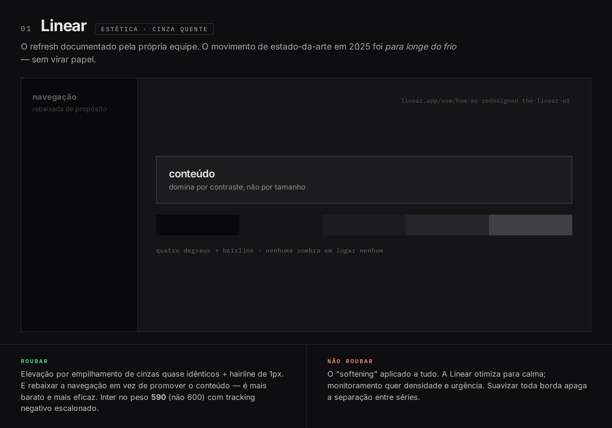
roubarElevação por empilhamento de cinzas quase idênticos + hairline de 1px. E rebaixar a navegação em vez de promover o conteúdo — é mais barato e mais eficaz. Inter no peso 590 (não 600) com tracking negativo escalonado.
linear.app/now/how-we-redesigned-the-linear-ui
260822_01_linear.png
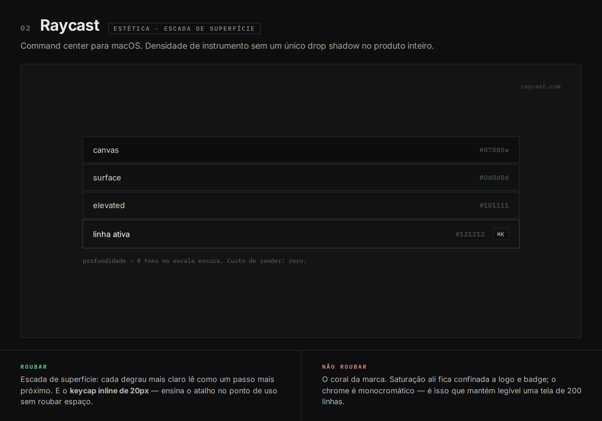
roubarEscada de superfície: cada degrau mais claro lê como um passo mais próximo. E o keycap inline de 20px — ensina o atalho no ponto de uso sem roubar espaço.
raycast.com
260822_02_raycast.png
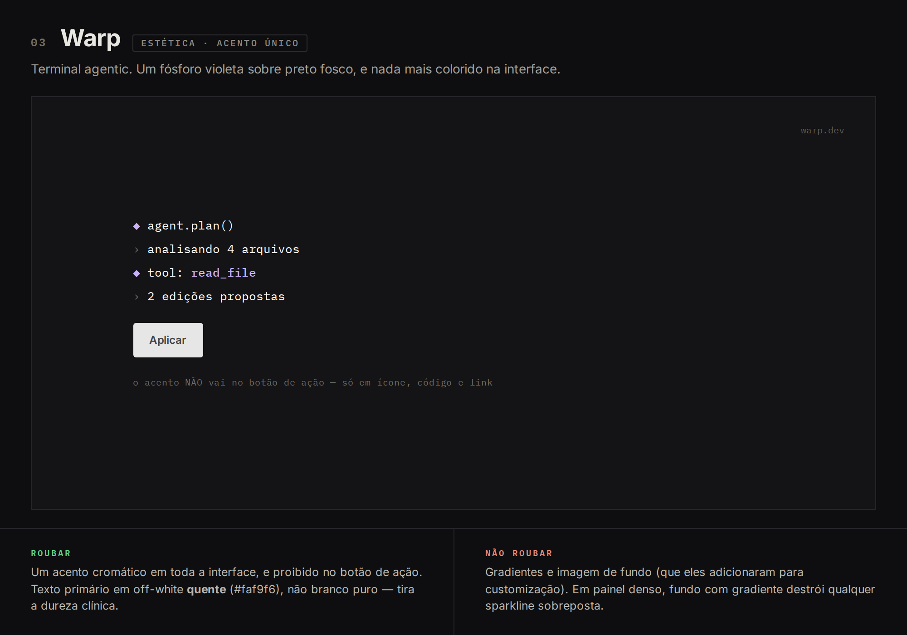
roubarUm acento cromático em toda a interface, e proibido no botão de ação. Texto primário em off-white quente (#faf9f6), não branco puro — tira a dureza clínica.
warp.dev
260822_03_warp.png
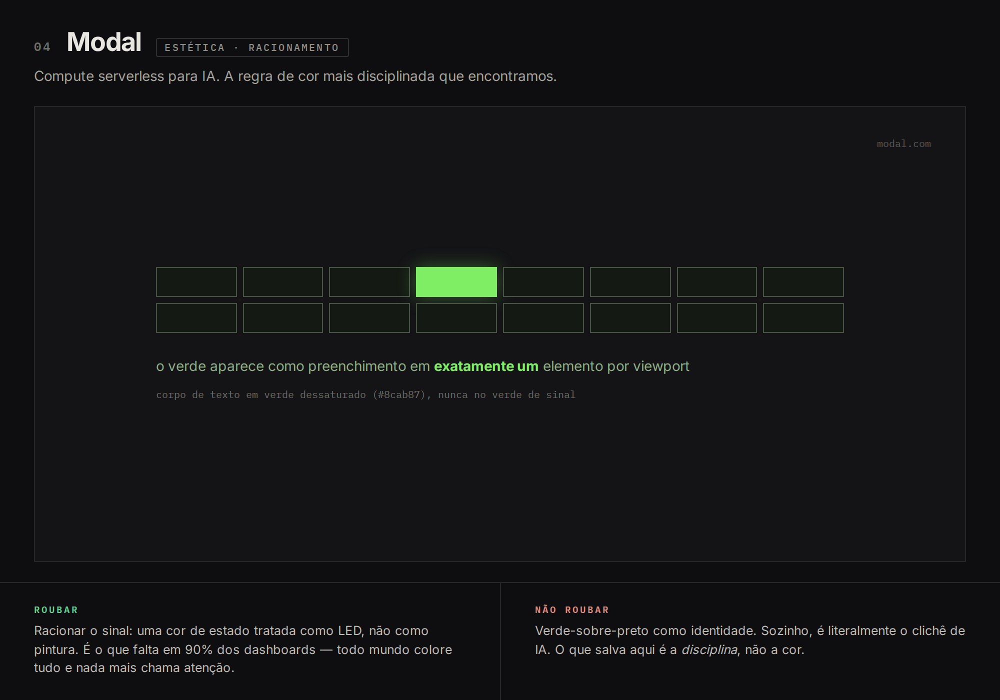
roubarRacionar o sinal: uma cor de estado tratada como LED, não como pintura. É o que falta em 90% dos dashboards — todo mundo colore tudo e nada mais chama atenção.
modal.com
260822_04_modal.png
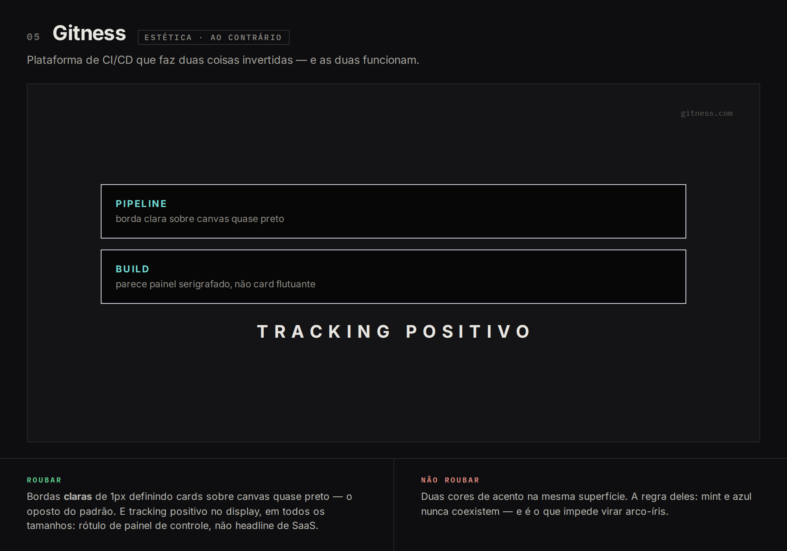
roubarBordas claras de 1px definindo cards sobre canvas quase preto — o oposto do padrão. E tracking positivo no display, em todos os tamanhos: rótulo de painel de controle, não headline de SaaS.
gitness.com
260822_05_gitness.png
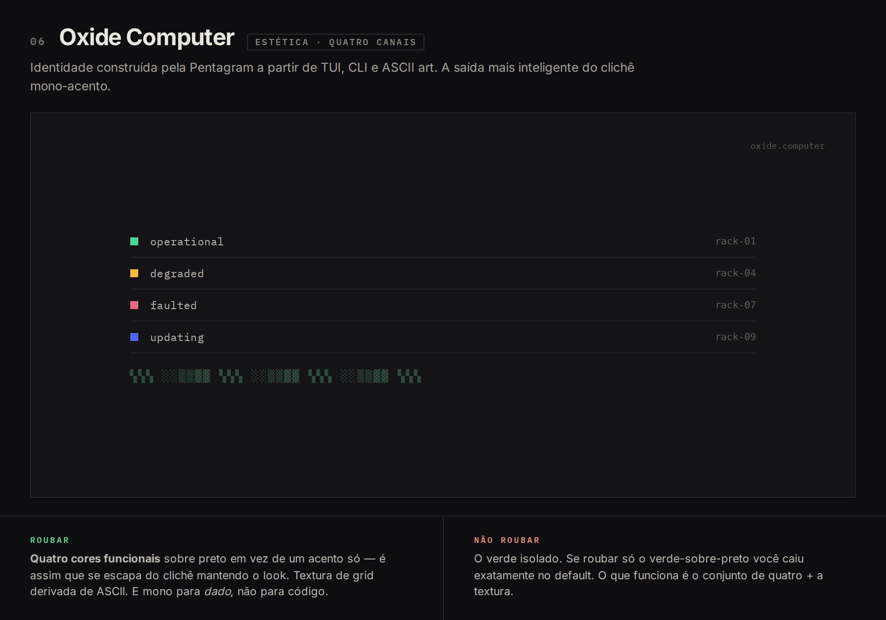
roubarQuatro cores funcionais sobre preto em vez de um acento só — é assim que se escapa do clichê mantendo o look. Textura de grid derivada de ASCII. E mono para dado, não para código.
oxide.computer
260822_06_oxide-computer.png
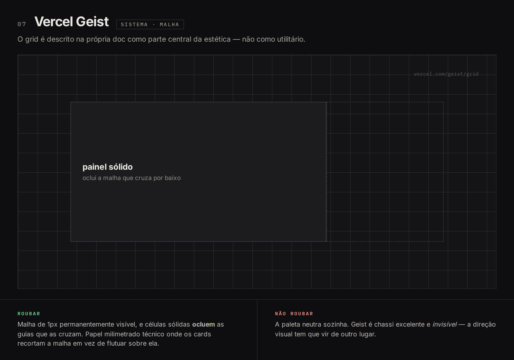
roubarMalha de 1px permanentemente visível, e células sólidas ocluem as guias que as cruzam. Papel milimetrado técnico onde os cards recortam a malha em vez de flutuar sobre ela.
vercel.com/geist/grid
260822_07_vercel-geist.png
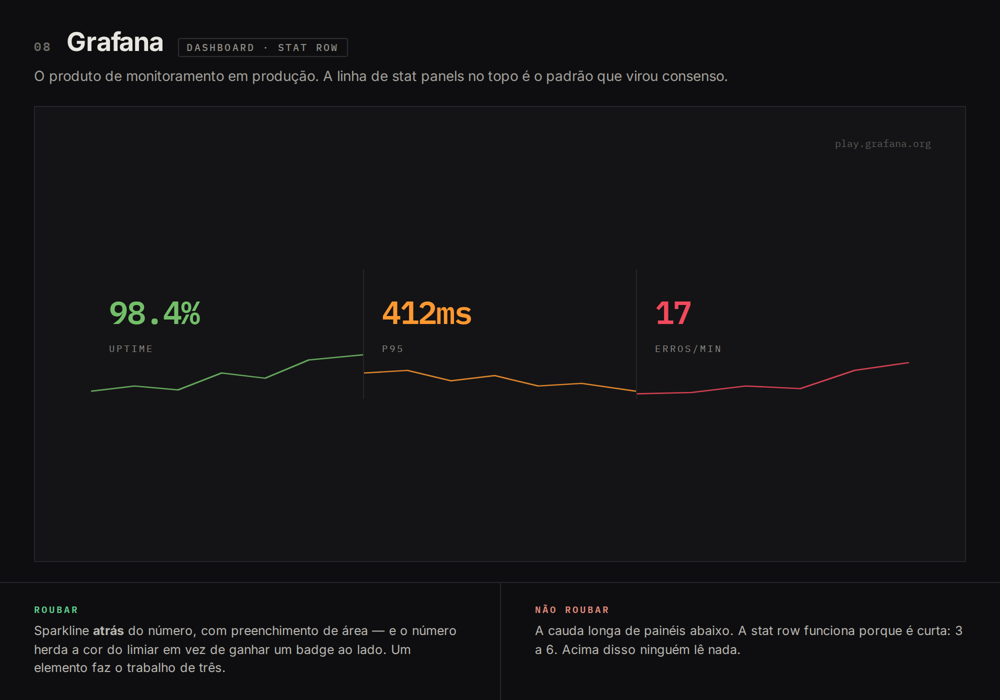
roubarSparkline atrás do número, com preenchimento de área — e o número herda a cor do limiar em vez de ganhar um badge ao lado. Um elemento faz o trabalho de três.
play.grafana.org
260822_08_grafana.png
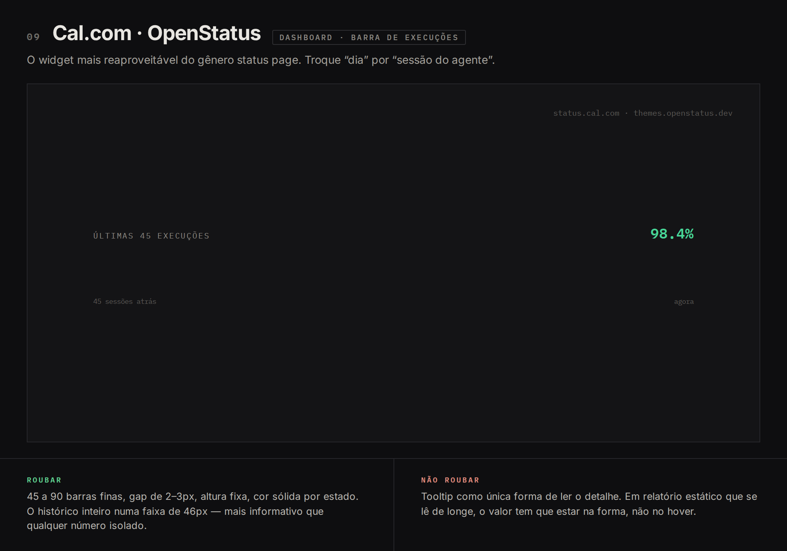
roubar45 a 90 barras finas, gap de 2–3px, altura fixa, cor sólida por estado. O histórico inteiro numa faixa de 46px — mais informativo que qualquer número isolado.
status.cal.com · themes.openstatus.dev
260822_09_calcom-openstatus.png
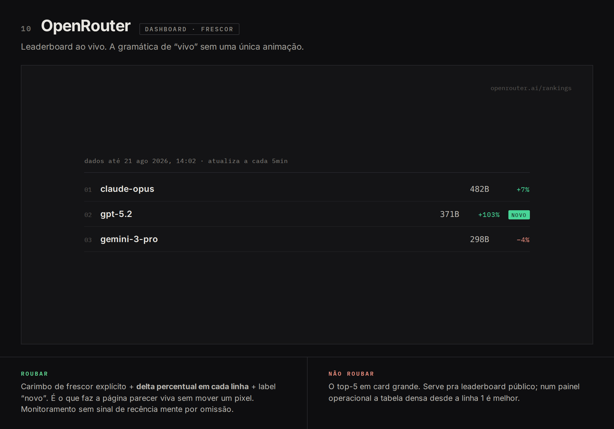
roubarCarimbo de frescor explícito + delta percentual em cada linha + label “novo”. É o que faz a página parecer viva sem mover um pixel. Monitoramento sem sinal de recência mente por omissão.
openrouter.ai/rankings
260822_10_openrouter.png
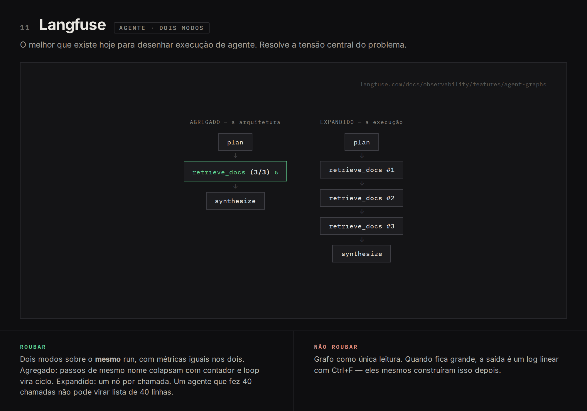
roubarDois modos sobre o mesmo run, com métricas iguais nos dois. Agregado: passos de mesmo nome colapsam com contador e loop vira ciclo. Expandido: um nó por chamada. Um agente que fez 40 chamadas não pode virar lista de 40 linhas.
langfuse.com/docs/observability/features/agent-graphs
260822_11_langfuse.png
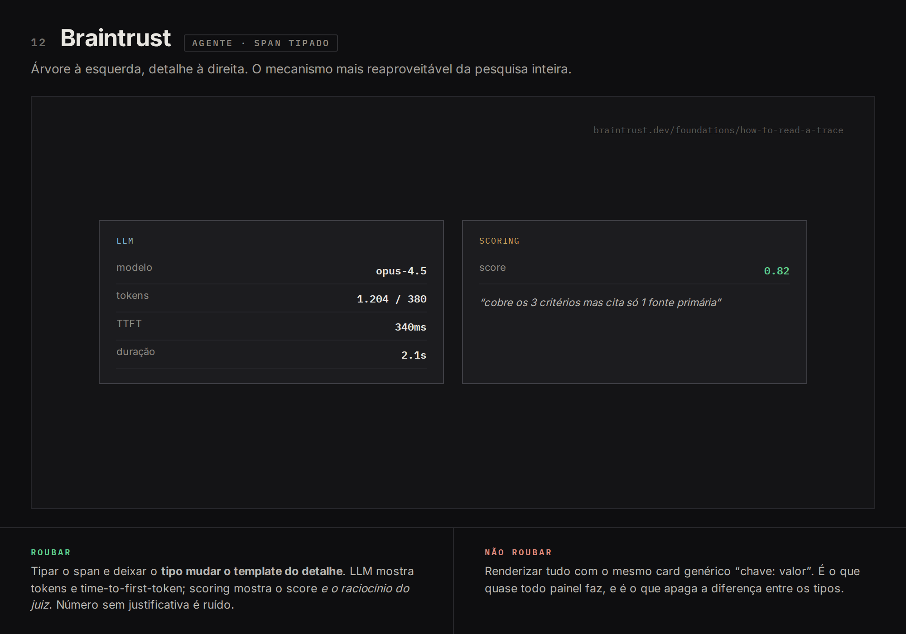
roubarTipar o span e deixar o tipo mudar o template do detalhe. LLM mostra tokens e time-to-first-token; scoring mostra o score e o raciocínio do juiz. Número sem justificativa é ruído.
braintrust.dev/foundations/how-to-read-a-trace
260822_12_braintrust.png
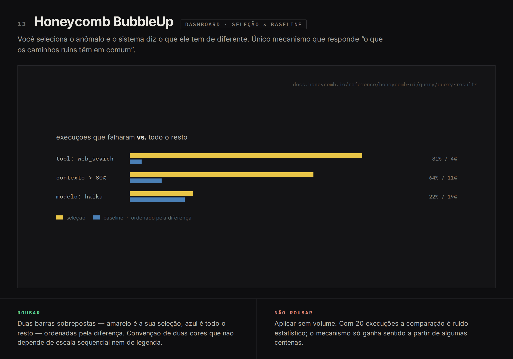
roubarDuas barras sobrepostas — amarelo é a sua seleção, azul é todo o resto — ordenadas pela diferença. Convenção de duas cores que não depende de escala sequencial nem de legenda.
docs.honeycomb.io/reference/honeycomb-ui/query/query-results
260822_13_honeycomb-bubbleup.png
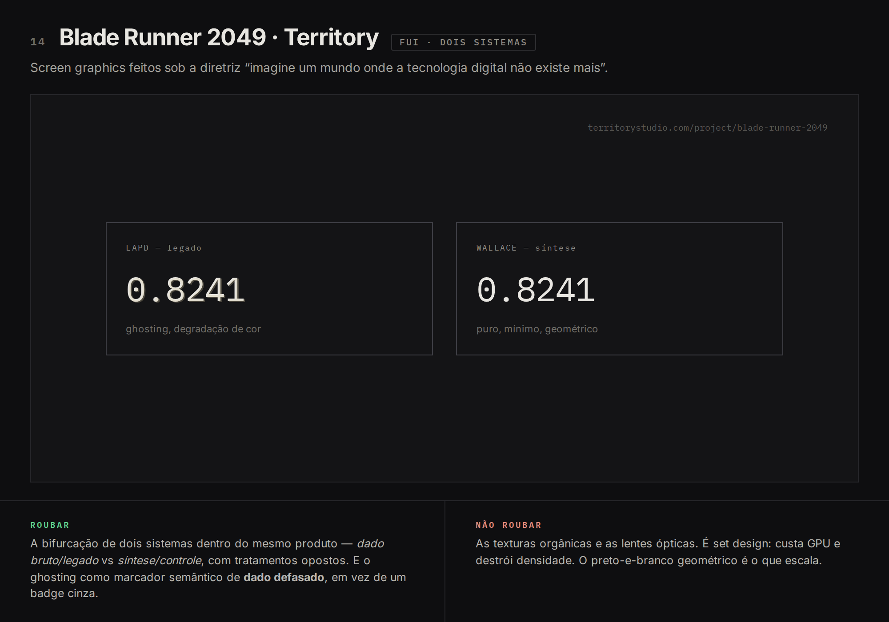
roubarA bifurcação de dois sistemas dentro do mesmo produto — dado bruto/legado vs síntese/controle, com tratamentos opostos. E o ghosting como marcador semântico de dado defasado, em vez de um badge cinza.
territorystudio.com/project/blade-runner-2049
260822_14_blade-runner-2049-territory.png
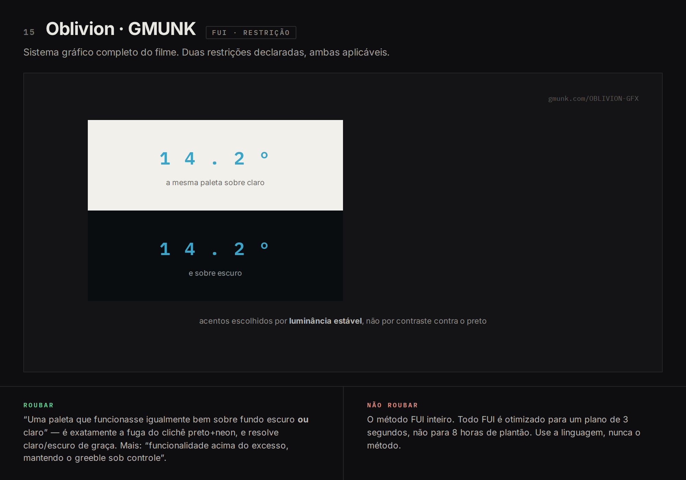
roubar“Uma paleta que funcionasse igualmente bem sobre fundo escuro ou claro” — é exatamente a fuga do clichê preto+neon, e resolve claro/escuro de graça. Mais: “funcionalidade acima do excesso, mantendo o greeble sob controle”.
gmunk.com/OBLIVION-GFX
260822_15_oblivion-gmunk.png
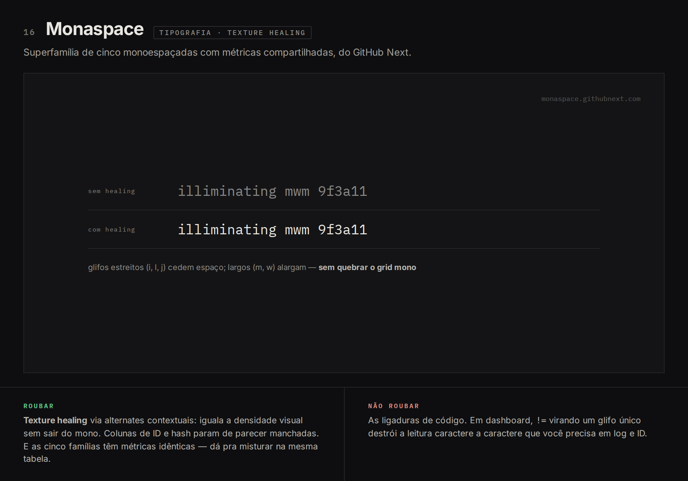
roubarTexture healing via alternates contextuais: iguala a densidade visual sem sair do mono. Colunas de ID e hash param de parecer manchadas. E as cinco famílias têm métricas idênticas — dá pra misturar na mesma tabela.
monaspace.githubnext.com
260822_16_monaspace.png
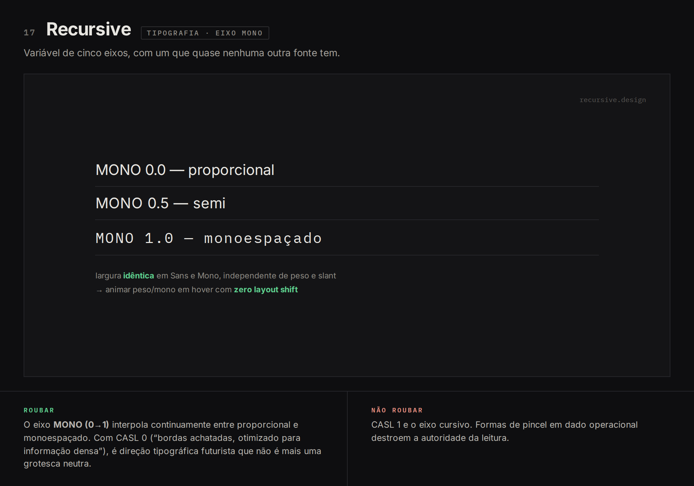
roubarO eixo MONO (0→1) interpola continuamente entre proporcional e monoespaçado. Com CASL 0 (“bordas achatadas, otimizado para informação densa”), é direção tipográfica futurista que não é mais uma grotesca neutra.
recursive.design
260822_17_recursive.png
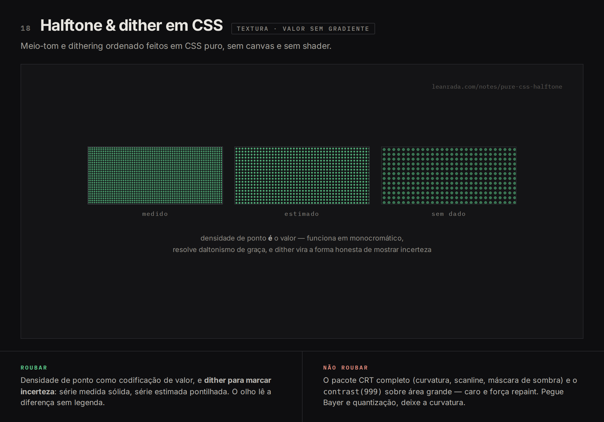
roubarDensidade de ponto como codificação de valor, e dither para marcar incerteza: série medida sólida, série estimada pontilhada. O olho lê a diferença sem legenda.
leanrada.com/notes/pure-css-halftone
260822_18_halftone--dither-em-css.png